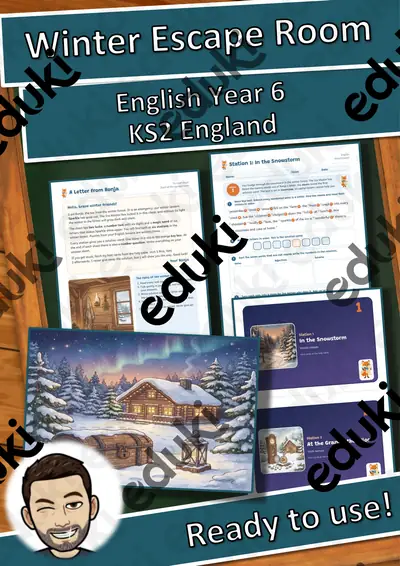
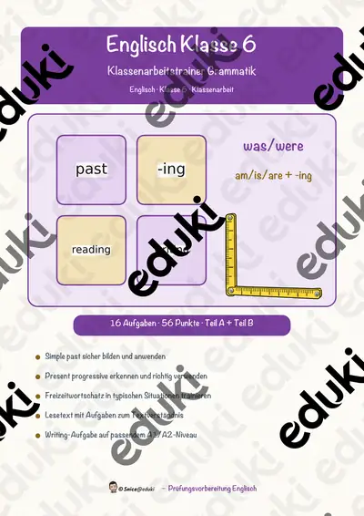
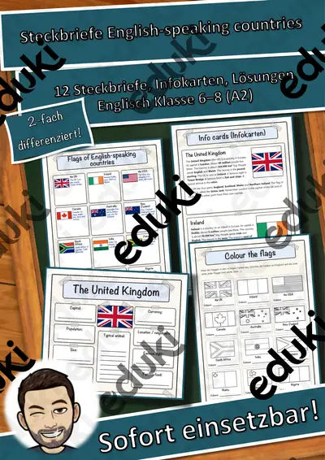
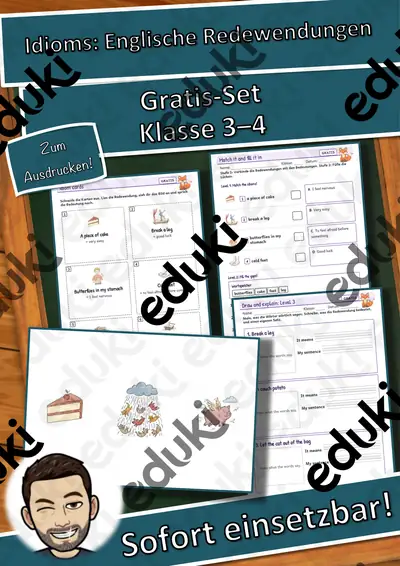
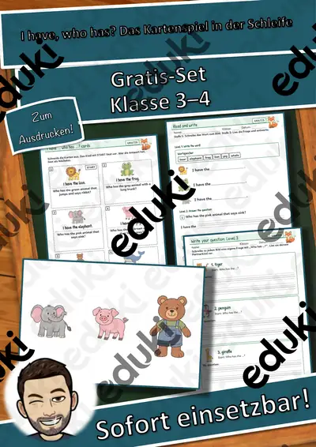

Englisch-Werkstatt: Present Progressive im Herbst – kostenlos, Klasse 5–6
KostenlosMaterial auf eduki ansehen
Ein Mini-Heft zum Present Progressive mit Herbstthema für Englisch in Klasse 5 und 6: -ing-Formen bilden, Lückensätze, Bilder beschreiben, Schüttelsätze, Fragen und Kurzantworten, Simple Present oder Progressive, Übersetzen. Mit Merkseite und Lösungen.
Einsatz im Unterricht: Übung nach der Einführung, Hausaufgabe, Förderkreis, Vertretungsstunde. Die Vorbereitung ist genau beschrieben (Seiten, Menge, Farbe, Zeit). Alle Bilder sind eigene Zeichnungen.
Texte KI-gestützt und von mir geprüft. Die Bilder sind eigene KI-gestützte Zeichnungen (keine Fotos).
Enthalten (13 Seiten): Merkseite · 7 Aufgabenblätter · Lösungen · Lehrerinfo
FachEnglisch
KlasseKl. 5–6
SchulformSek I Mittlere Schulform
MaterialartArbeitsblätter
Ähnliche Materialien

Winter Escape Room, English Year 6 (KS2): 6 Stations, 2 Locks, 1 Magic Word (FREE)

Englisch-Werkstatt: Present Progressive im Herbst – Plus-Paket, Klasse 5–6

Klassenarbeitstrainer Englisch Klasse 6 – Simple Past und Present Progressive

English-speaking countries – Steckbriefe Englisch (12 Länder mit Flaggen, A2, differenziert, mit Lösungen)

Fish and Chips Vokabeltraining (auch Homeschooling)

Englisch-Werkstatt: Idioms: Englische Redewendungen – kostenlos, Klasse 3–4

Englisch-Werkstatt: I have, who has? Das Kartenspiel in der Schleife – kostenlos, Klasse 3–4